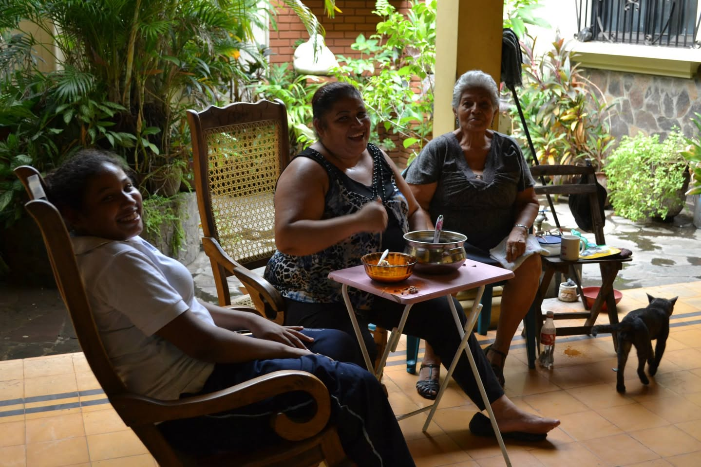

マナグアから長距離バスに乗り、ニカラグア北部の都市レオンへ向かった。レオンはスペイン語でライオンを意味する。名前の通り、町の中心にあるレオン大聖堂にはライオン像が鎮座していた。


サンディニスタの本拠地
レオンはサンディニスタ民族解放戦線の本拠地として知られており、内戦の痕跡が今も色濃く残っている。壁に描かれた鮮やかなムラールや、至る所に立てられた記念碑が、この街がただの観光地ではないことを物語っている。
町には数多くの教会が存在し、植民地時代のスペイン建築と、革命の記憶が奇妙なコントラストを描いている。

ルベン・ダリオの住居跡
レオンが誇るもう一つの文化遺産が、19世紀の詩人ルベン・ダリオの住居だ。スペイン語詩に多大な影響を与えたとされるこの詩人の生家が、現在は博物館として一般公開されている。
スペイン語圏ではダリオは教科書に載る存在らしく、現地の人に「ルベン・ダリオを知っているか？」と聞かれたが、残念ながらその時の私は全く知らなかった。旅から帰って調べてみると、なるほど確かに偉大な詩人だった。
英雄記念館
もっとも印象に残ったのは英雄記念館だった。内戦参加者の記録を保存するために作られたこの施設は、地域の主婦たちが写真を集め始めたことがきっかけで誕生したという。
訪ねると、スタッフの女性たちが中庭でご飯を食べていた。猫が一匹、のんびり足元をうろついている。「どうぞ」と笑顔で迎えてくれた。

白髪のおばあさんが話しかけてきた。息子さんを革命で亡くしたこと、写真が手元になかったので館内に飾ることができなかったこと。そして——「私の息子は、あの角を曲がったところで死んだの」と、外の路地の方をそっと指さした。
「いまは平和だから」と、おばあさんは静かに笑った。その言葉の重さが、しばらく胸に残った。

壁一面に貼られた若者たちの写真を見ながら、彼らのほとんどが10代から20代で命を落としたことを知り、言葉を失った。革命は教科書の中の出来事ではなく、ここに生きた人々の物語だった。
ロブスターと中米の食卓
観光の後は食事。レオンの食堂でロブスターとカレーを食べた。合計2,000円ほど——中米価格で考えると少々高めだが、ロブスターでこの値段なら安い。

翌日はラム酒工場を見学してから、次の目的地エルサルバドルへ移動する予定だ。
中米の食事は旅の記憶になる——確かにそうだった。翌朝のトイレも含めて。